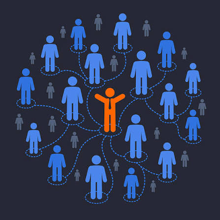

The internet is a massive, worldwide network that connects millions of computers and electronic devices together. It works like a global postal system, allowing these devices to talk to each other and share information instantly. This data travels around the earth through hidden underground cables, satellites, and wireless Wi-Fi signals. No single person or government owns the entire system; instead, it is a shared network maintained by people all over the world. We use this powerful connection every day to visit websites, watch videos, send messages, and shop online.
Click the image for Examples.

Computer networking is the practice of linking multiple computers and devices together so they can share information and resources. It acts like a digital bridge, allowing devices like your phone, laptop, and printer to talk to each other. When you connect these devices to a central hub like a Wi-Fi router, you create a private network. This connection allows you to easily share files, stream media, and use the same printer from anywhere in your home. Ultimately, networking turns isolated electronics into a teamwork-ready system, making it the foundation that allows the internet to exist.
Click the image for Examples.
Network devices are the physical pieces of hardware that connect computers, smartphones, and other electronics together so they can send data back and forth. They act like the traffic cops, postal workers, and bridges of the digital world by directing information to the right place. For example, a router takes the internet from your wall and guides it to your specific phone or laptop. Other devices, like switches or modems, help expand the network or translate signals so your gadgets can understand them. Without these specialized pieces of hardware, our computers would be completely isolated and unable to access the internet.
CLick the image for Examples.
InterWorkHub Is a guide who introduce the important aspects of Internet and Networking for a moderm education and communication. This website provides the basics of the networking that will help the beginners or students to learn and to gain confidence when using the technology.
This Webpage will provide a limited lessons for the students/beginners to understand it carefully, to avoid the complexity of the aspects of Internet and Networking Technologies.
The Topics are Consist of Three Core Subjects: